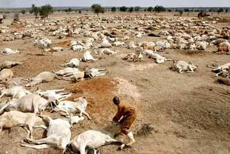
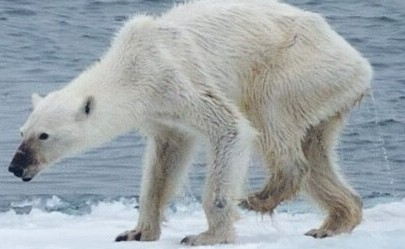

“These are very serious problems, very serious changes are happening, but they are still poorly understood. We need more research to understand them. A lot of the major science is done by the US.”

"Producing meat and animal products requires a lot of animals raised on huge, unsustainable amounts of plant protein."

“When we look forward several decades, climate models predict such profound loss of Arctic sea ice that there’s little doubt this will negatively affect polar bears throughout much of their range, because of their critical dependence on sea ice,”
A Chart on the rapid change in Sea level